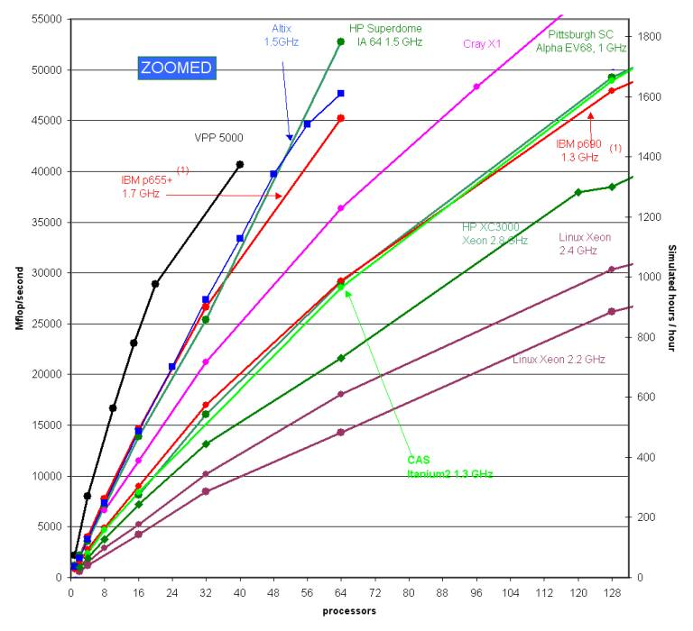

平行化運算 - MPPMM5
早在 1998 年的 MM5V2.8 裡出現了這款讓 MM5 採用分散式記憶體（Distributed Memory, DM）以及大量平行運算處理器（Massively Parallel Processors, MPP）來進行平行運算的套件。實作上是透過使用 RSL 的 MPI 訊息傳遞系統函式庫來進行。
要使用 MPPMM5 會需要 MM5 主程式、MPP 套件、pgf77、MPICH。
編譯 MPP MM5
- 解壓縮：
tar –zxvf ../MPP.tar.gz請將解壓縮後的 MPP 資料夾移動到 MM5 資料夾下。 - 修改 MM5/configure.user： 請先將基本的模式參數、物理參數如同 MM5 的章節中所述設定完後，依據你的電腦架構以及編譯器將段落七中相應設定的註解拿掉，例如我這邊使用的機器是 Linux 與 PGI 編譯器，那麼就是把 7g1 的註解拿掉，再依據環境做適當修改（要注意段落 3 裡的設定不是給 MPP 用的，所以都要註解掉）。
- 編譯：
make mpp修改完 configure.user 後直接編譯就好，如果這不是第一次編譯，請先執行make uninstall清理那些已經編譯過的檔案。如果沒有意外的話應該會在 MM5/Run 下產生 mm5.mpp 這支程式（有意外發生的話請不要太意外）。 請注意：若將一份安裝好的 MPP MM5 移動到別處可能就會失效，裡面似乎有一些絕對路徑的設定，換個地方灌請重新編譯一次。 - 製作並修改 mm5.deck：
make mm5.deck這個版本的 mm5.deck 並不會負責執行 MM5 主程式，僅有產生 namelist 的功用（可以比較這個 mm5.deck 的最後一段跟一般單核 MM5 所用的 mm5.deck 裡最後一段的內容，會發現指令有些許不同） - 開始模擬：
開始模擬前同樣也是要將該準備的資料如 BDYOUT_DOMAIN1 等檔案準備好，所有資料準備就緒之後，執行
mpiexec –np 4 mm5.mpp如此將會使用 4 個執行緒進行平行運算（換用 mpirun 取代 mpiexec 也行，兩者差異請見 Stackoverflow: mpiexec vs mpirun）。同樣的，這些步驟也可以利用qsub指令來將它丟進 TORQUE 的工作排程中，跟單核 MM5 那邊關於開始進行模擬的部份一樣。
模擬結束後，與單核 MM5 不同的是在 MM5/Run/restrts 下會出現每個執行緒自己的 Restart File。另外會產生 rsl.out.0000、rsl.out.0001.....等輸出資訊，以及 rsl.error.0000、rsl.error.0001.....等偵錯資訊。
除錯
如同上面所說，安裝時不大可能太順利，很順利的話那....恭喜你，一定是你上輩子有燒好香。其中會不順利的部份原因是因為我們的機器是 64 bits 的機器，如此在變數的長度上會有一些差異，例如長整數可能也不是預期中的 64 位元而是 32 位元（詳見「長整數各自表述」這篇文章）。另一部份就是程式本身的 bug 了，MM5 官方網站的 HelpDesk 列出了一些問題以及解決方案。在編譯時所出現的 Error 錯誤訊息若不解決的話是不能跑的，而 Warning 相對來說就比較次要了，多半可能是型別轉換的警告 warning: initialization makes integer from pointer without a cast, cast to pointer from integer of different size
效能比較
關於採用幾個執行緒可以達到最好的效能，可以參考 MM5 MPP Helpdesk 上的 Parallel MM5 benchmarks, 2004。在實驗室裡的主機上，透過楊明仁教授對納莉颱風（2001）採用 6 秒的時間步長、兩公里的網格間距，271 x 301 x 31 個網格點使用單執行緒進行模擬所得出來的結果是所需時間為模擬時間的三倍（真實世界六小時可以得到兩小時的模擬結果）。若採用相同設定，但以兩個執行緒進行平行運算則是讓所需時間縮短為模擬時間的兩倍。
實際模擬時所用的執行緒數量會有個改進極限，並不一定是單純的線性倍增。這牽扯到了內部程式碼的編寫方式以及機器間的資料交換，有興趣可以去研究平行運算的相關資料。下圖來自於前述的 benchmark 網頁，為針對同一個模擬個案採用不同平台、不同處理器數量的表現： 
另外經實驗證明其實單執行緒與多執行緒的平行化模擬結果並不會百分之百相同（詳細差異大小我沒有進一步去量化分析，有興趣可以試試看，或是找找有沒有相關資料）初步推測可能是因為在平行運算時模式的平衡條件會不同，再加上數值上的誤差因此造成不同的結果。
總之，個人認為嘗試將這個類比的世界以數位的方式表示時就已經沒有所謂絕對的正確值了，端看你是站在哪裡當作你研究的基準點罷了。
偽物比真物有著壓倒性的價值，單憑那份想要成為真的東西的意志，就已經比真的東西更真。（偽物の方が圧倒的に価値がある。そこに本物になろうという意志があるだけ、偽物の方が本物より本物だ ―「偽物語」）
數值模擬不就是這麼一回事嗎；）